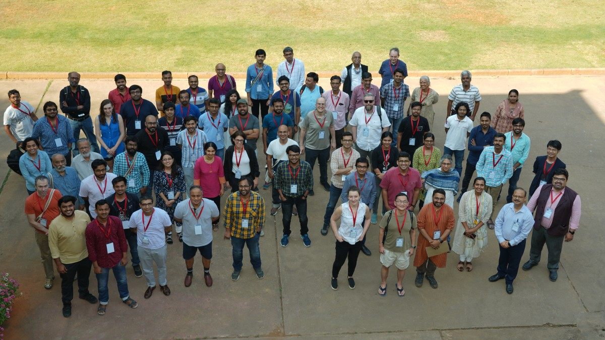

India’s expanding Cosmology community
‘Frontiers in Cosmology’ was a five-day international conference held at Raman Research Institute (RRI) during February 20 – 24, 2023. More than 100 participants including researchers, scientists, students and faculties from around the world attended the meet.
Speakers at the 'Frontiers in Cosmology' conference. Credits: ESO/ M. Kornmesser, RRI Newsletter PJC Special Issue - I
India has seen a slow but steady growth in the number of researchers pursuing Astronomy and Astrophysics, particularly in cosmology and instrumentation, during the past three decades.
One such recent effort to unite the leading cosmologists was at the ‘Frontiers in Cosmology’, a five-day international conference held at the Raman Research Institute (RRI), Bengaluru, during February 20 – 24, 2023. The conference was one among the many celebrations to mark the platinum jubilee year of RRI, founded by Nobel laureate Sir CV Raman.
Frontiers in Cosmology saw a participation from over 100 subject experts including researchers, scientists, students and faculties and turned out to be a global platform to discuss, deliberate and share the latest from the field.
The conference offered five broad themes - Inflation and Cosmic Microwave Background (CMB), Cosmic Dawn and Epoch of Reionisation, Low Redshift Cosmology, the Evolving Universe and the Next Generation Experiments. Young researchers used this platform to showcase the findings of their research, the best 25 posters were on display here.
The conference hosted varied talks on CMB, characterization of galactic foregrounds, instrumentation, future astronomical facilities like the Simons Observatory, a ground-based CMB experiment located at Cerrro Toco in Chile, the Thirty Metre Telescope (TMT), the Square Kilometre Array (SKA), PRATUSH, some of which has active participation of RRI. Engaging and enlightening the audience about the telescope facilities like the South Pole Telescope (SPT) and the BICEP Array telescopes – both located in Antarctica – SARAS, CHIME, the young students got a flavour of the facilities, both existing and upcoming. The event saw serious deliberations revolving the ever-growing challenges faced by the astronomy community in getting land free from light pollution and human interferences. Experts stressed on the need for building improved instrumentation facilities and technological support besides designing facilities on larger and collaborative basis.
One of the speakers, Akito Kusaka, who spoke on ‘CMB – challenges and future prospects’, elaborated on the perfect conditions for installing the CMB detectors in the world. Further, his address highlighted the leakage of observations into polarization as one of the biggest hurdles in measuring CMB. The theories and scientific contributions of late Shivaramakrishnan Pancharatnam, (a noted student of Sir Raman), continue to be relevant even today, acknowledged Kusaka.
Giving elaborate details, contributions and challenges of operating, Maclean Rouble, in her talk titled ‘S&T of SPT : Past, Present and Future’, underlined the need for having sensitive detectors in order to improve the CMB mapping efforts. She touched upon the likely possibilities of telescopes post the operations of SPT, including the mm-line intensity mapping and the idea of developing kinetic inductance detectors. Another operational telescope in the Southern polar region is the BICEP Array telescopes, which are small aperture telescopes deployed to measure CMB with highest precision. Ritoban Basu Thakur in his talk informed about the heightened capacities of the upgraded BICEP Array telescope.
NenuFAR and the CoDEX Program initiated by the European Research Council were discussed.
Josh Dillon’s address on ‘Recent progress in 21cm Cosmology with the hydrogen epoch of reionization array’ detailed on the necessity for co-designing compact instruments with greater sensitivity for effective measurements. Nichole Barry elaborated on the difficulties in taking observations and working at the Murchison Widefield Array, especially for the epoch of reionization science in her address titled ‘The dangers of Whitefield Observations for the EoR 21cm measurements’.
Introducing the SARAS experiment setup ‘Constraining high redshift astrophysics with SARAS’, by Saurabh Singh enlisted the multiple challenges, especially the bright foregrounds, and the shrinking radio-quiet zones in India for conducting continued observations.
Introducing capabilities of CHIME, HIRAX and CHORD facilities, Shiv Sethi’s talk ‘Detecting HI in the post-reionizaiton’ suggested two potentially strong methods – stacking and cross-correction – that can produce good observations within the redshift 0.3 – 1.4 range. Hamsa Padmanabhan’s talk ‘A multi-messenger view of the baryonic Universe out to the Epoch Reionization’ underlined the requirement for strengthening the cross-co-relations for improving the 21cm HI intensity mapping in future.

Bringing together brilliant minds. Group photo of the conference attendees. Credits: RRI
At a time when the country is sealing its position in Astronomy, senior scientists used this stage to inform the young attendees about the many next generation astronomy facilities, where India has major stakes. Yashwant Gupta spoke about the upgraded Giant Metrewave Radio Telescope (uGMRT) and presented an insight into the world’s largest radio telescope, the Square Kilometre Array (SKA). Another mega-science project participated by India, the Thirty Metre Telescope (TMT) – the proposed largest optical telescope – was spoken during a session by GC Anupama. She narrated the the numerous hardships faced in erecting the telescope at the designated Mauna Kea in Hawaii and years of continued efforts to locate a search alternate site, all for science!
Video recordings of the conference talks are available on the RRI YouTube channel.
Cover image credits: ESA - C. Carreau
Acknowledgements:
CosmicVarta would like to thank the organizers of the “Frontiers in Cosmology” conference and Raman Research Institute (RRI) for their support and cooperation.
Related articles
- Chandrayaan-3 : A 14 day lunar cruise
- Proceedings of the National Seminar on Advances in Astrophysics and Space Science Research (NSAAASSR) 2023
- Exploring the topology of hydrogen distribution in the early universe
- Gravitational Waves in an Inhomogeneous Universe
- SARAS 3 telescope refutes astrophysical origins of the claimed cosmic dawn signal